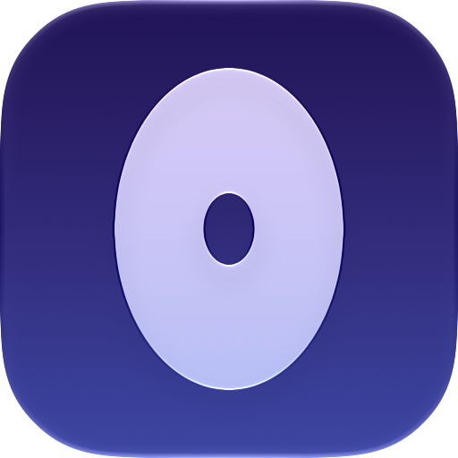

Your to-dos and today's meetings, always one glance away — in the notch, never in a window.
Press a shortcut from any app, type, done. No floating window, no app to switch to.
Today's calendar sits above your list, with a quiet nudge and a join link before each one begins.
No Dock icon, no badge, no notifications you didn't ask for. It opens when you look at it and nowhere else.
To-dos, notes and settings are stored on your Mac. There is no Otto account and no Otto server they sync through.
Whether you connect via macOS Calendar or Google, Otto only ever reads events — it never creates, edits or deletes one.
Full details: Privacy Policy